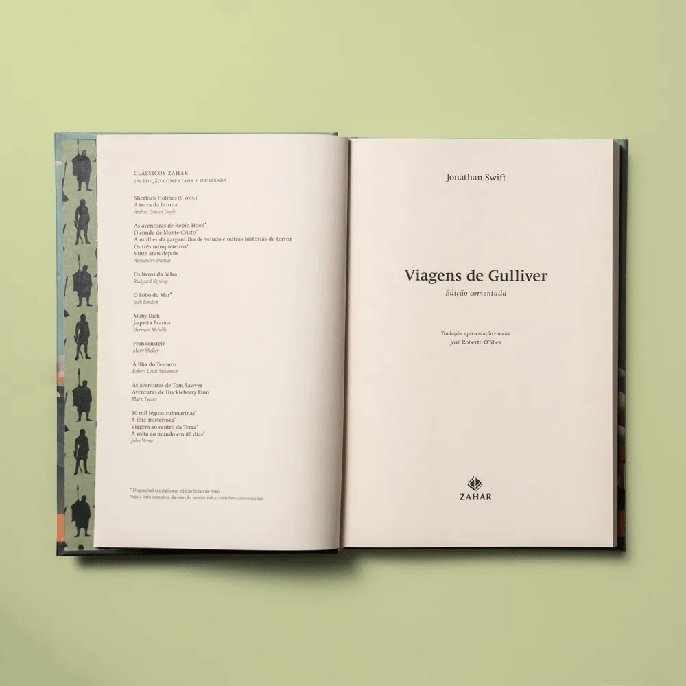
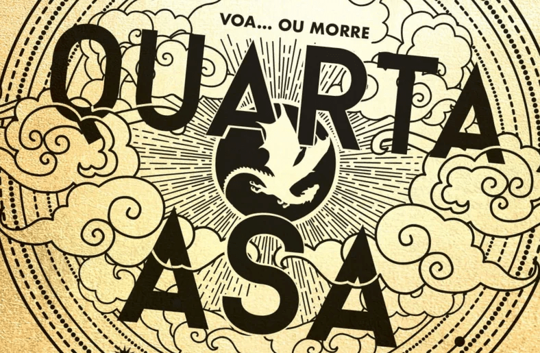

Viagens de Gulliver é um retrato satírico da civilização humana, suas relações e instituições marcadas
pela hipocrisia,
pelo preconceito e pela ganância.
Livro: Viagens de Gulliver
Gulliver é médico cirurgião, mas ele também adora uma aventura.
Seguindo seu
instinto aventureiro, ele vai embarcar como
médico em um navio. Mas após um naufrágio, ele para numa ilha com seres minúsculos. Depois disso, ele ainda
vai fazer
mais três viagens que o levarão para os destinos mais peculiares existentes.
Créditos: Editora Zahar
Volta e meia, eu gosto de procurar um clássico para ler. O curioso sobre As Viagens de Gulliver é que eu
sabia pouca
coisa sobre ele. Sabia é claro que ele tinha virado filme e que há adaptações para crianças. O fato de ter
adaptações
para crianças é muito curioso, pois ele é um livro bem denso de críticas e questões mais filosóficas. Então
acredito
que
nas adaptações, o teor “aventura do livro” deve ser o foco.
As Viagens de Gulliver foi publicado em 1726, mas seu nome original era Viagens a diversos países remotos do
mundo, em
quatro partes, por Lemuel Gulliver, a princípio cirurgião e mais tarde capitão de vários navios. Somente em
1735 teve
seu nome alterado. Essa edição da Zahar vai começar com um texto de apresentação maravilhoso. Assim, ele já
te prepara
para as questões do livro, pois ele não é somente uma história no estilo relatos de viagem. Jonathan Swift
faz aqui
uma
sátira para criticar a Inglaterra, a monarquia, o progresso, a ciência e o olhar arrogante do colonizador.
Outro ponto
interessante é que o autor colocou um micro resumo dos capítulos no início de cada um. Então, assim, já
sabemos o que
vai acontecer nele.
Na primeira viagem de Gulliver, ele vai parar, depois do naufrágio de seu navio, na ilha de Lilliput, terra
de seres
diminutos de 15 centímetros. Depois de acordar amarrado no chão, Gulliver logo decide conhecer esse povo e
explorar
tudo
sobre a ilha e a comunidade dali. É interessante ver a relação que o autor faz com o tamanho desses seres,
pois
Gulliver
ao conhecer mais os liliputianos e seus problemas, vai achar tudo muito pequeno e insignificante, com
problemas que
ele
não considera temas importantes. Aqui vamos ver a semelhança do local com a Inglaterra da época. Além disso,
há um
desentendimento entre dois povos da ilha sobre qual seria o lado certo para quebrar um ovo. Aqui mais uma
vez o autor
está fazendo críticas a pessoas, partidos e povos que se desentendem pelos motivos mais banais.
Já, na segunda viagem, depois de ser abandonado por sua tripulação, ele para em Brobdingnag, uma terra com
seres
gigantes,. Assim, ao ver de perto a figura humana em dimensões bem maiores, ele vai ver o pior que temos.
Tudo pra ele
vai ser nojento, pois ele vai ver os poros, feridas e outras coisas numa visão bem mais ampliada, causando
repulsa. Só
que aqui, como ele é pequeno, ele vai ser tratado como brinquedo pelos gigantes. Nessa terra, o autor vai
aproveitar
para explorar muitas questões políticas. E assim, Gulliver vai perceber que há diversas falhas no sistema
político de
seu país.
Na terceira viagem, depois de seu barco ser atacado por piratas, Gulliver é resgatado por uma ilha voadora.
Nessa parte,
ele vai passar por cinco lugares: Laputa, Balnibarbi,
Glubbdubdrib, Luggnagg e Japão. Em Laputa é muito
interessante
como o autor explora questões envolvendo às artes musicais, matemáticas e astronômicas. Já em Balnibarbi, o
autor
aproveita para satirizar a ciência. Ele faz isso de uma maneira bem engraçada mesmo, mostrando os habitantes
desse lugar
fazendo as pesquisas mais apuradas. Nos outros países, ele ainda vai discutir história (Glubbdubdrib) e
imortalidade
(Luggnagg).

Detalhes do livro por
Autor

Quarta Asa, Série Empyrean #1
Set 30, 2024 por Yves
"Um dragão sem seu cavaleiro é uma tragédia. Um cavaleiro sem seu dragão é um homem morto."
Livro: Quarta Asa
A versão resumida de Quarta Asa é: uma jovem em apuros com uma inteligência subestimada, um moreno perigoso
com um
passado mal resolvido, e um plano em andamento muito maior do que eles.
Já na versão não tão resumida, aqui seguimos o desenrolar da história de Violet, uma jovem que estudou a
vida toda para
ser Escriba, alguém responsável por guardar os maiores segredos do reino e dar continuidade ao conhecimento
das gerações
passadas.
Depois de crescer entre livros, memorizar rituais, mapas e fatos históricos, qual a sua surpresa quando a
mãe — a
general comandante de Navarre — a obriga a entrar na Divisão dos Cavaleiros.
E não é um “a minha mãe mandou eu fazer tal curso”. É mais uma questão de “os soldados dela me arrastarão
até o portão
correto e me jogarão do parapeito se eu não usar minhas próprias pernas”.
Quer dizer, uma dinâmica bem saudável.
O Instituto Militar de Basgiath funciona com base em quatro Divisões: a Hospitalar, a dos
Escribas, a da Infantaria e a
dos Cavaleiros. A última sendo a de maior prestígio e menor expectativa de vida.
No caso da divisão dos Cavaleiros, naturalmente eles passam por todo tipo de teste físico, além de
aprenderem manobras
de combate corpo a corpo e serem instigados ao conflito.
Contudo, além de Violet ser menor que todos os outros cadetes e ter anos de desvantagem no preparo, a nossa
mocinha
também sofre de uma doença que enfraquece seus ossos e que será sua ruína se descobrirem.
"Jesus foi, portanto, crucificado como se fosse um rebelde a mais, recebendo o castigo habitual; isso
parecia ser tudo.
Nenhum romano da época poderia ter imaginado, naquele momento, que tal crucificação seria apenas um
início."
Livro: Império Romano
Continuando a publicação da coleção História Universal Isaac Asimov, a editora Planeta Minotauro traz o
terceiro livro
da coleção, O Império Romano: A Ascensão e a Queda do Maior Império da Antiguidade. A ideia desses livros é
apresentar a
história de formação das maiores civilizações do mundo. O primeiro volume foi sobre os egípcios e o segundo
sobre os
gregos.
Asimov tem um livro no qual ele apresenta o surgimento de Roma. Ele relata tudo que aconteceu em alguns
séculos até a
chegada de Otaviano, sobrinho de Júlio César ao poder. A partir desse
ponto, temos o começo desse livro. Então, em
Império Romano, Isaac Asimov apresenta e elabora as principais linhas do desenvolvimento
desse grande poder do Mundo
Antigo, desde a proclamação de Augusto como imperador até a queda do Império Romano Ocidental e o
estabelecimento dos
reinos germânicos.
Começamos, então, vendo como Otaviano, no poder, se dispôs a organizar o governo. Muito interessante que
aqui temos o
relato dos acontecimentos envolvendo a crucificação de Jesus. Depois disso passamos a sucessão de Augusto,
contudo ele
não tinha filho homem, somente uma filha mulher. Passamos por uma sucessão de nomes e de seus momentos
envolvendo
filosofia e religião. Após muitos momentos de glória e de dificuldades, tempos a parte focada nos reinos
germânicos. O
livro ainda conta com uma vasta cronologia de todos os fatos no final.
A escrita do Asimov é ótima, muito fluida e direta, assim, sem muita enrolação, todas as informações são
expostas. Eu
gosto bastante, apesar de achar que recebo muitas informações ao mesmo tempo e sinto em alguns momentos que
me perco.
Fazer a leitura desse terceiro volume foi muito importante, pois podemos juntar algumas pessoas de
acontecimentos dos
outros livros, lembrei de algumas informações sobre o Egito.